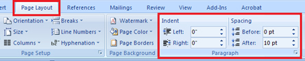
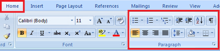
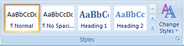
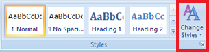
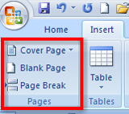
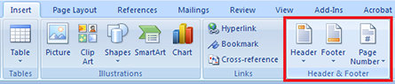

Training Room 4—Reports
Reports
Reports are documents that present ideas and facts in a logical form so that readers can understand presented information, form opinions, and make decisions, if necessary.
The purpose of the report and the intended audience will determine the report’s length and format.
Reports can provide information, tell a story, or present an opinion.
Formal reports give information about a particular topic and are written according to a specific style guide, such as that of the Modern Language Association (MLA) or the American Psychological Association (APA). In the workplace, businesses use a variety of formatting styles to reflect their corporate image and unique style of branding.
Lists and Outlines
You have already learned how to create bulleted, numbered, and multilevel lists in the graphics section of this module. Using lists and outlines for report-writing will help you organize your thoughts in a meaningful and logical way in order to begin the writing process. These lists can guide your writing and ensure you discuss every point you want to make.
Here is an example of an outline that will help you begin writing a report.
MICROSOFT BUSINESS CERTIFICATION
- Benefits of Certification
- Skills for business and technology
- Industry standards recognition
- Career options
- Certification Options
- Microsoft Office Word
- Microsoft Office Excel
- Microsoft Office PowerPoint
- Microsoft Office Access
- Career Connections
- Interests, Values, Beliefs, Resources, Prior Learning Experience
- Possible Career Paths
- ALIS Web site career planning
Formatting Business Reports
After completing your outline and then writing your report, you will format your report using a specific style. There are several formal report styles for you to choose from, so select a style appropriate for the purpose of your writing.
Click the links below to see examples of different report styles and their formatting.
Simple report for school or business
Reports for humanities (English and Social Studies): MLA
Reports for Social Sciences (Psychology): APA
As you probably noticed, reports can look very different depending on the formatting style the author uses. It is important to always check with your teacher or employer as to his or her preferred style.
In the following examples and demonstrations, you will discover the structure of a simple report, and then learn to apply formatting to enhance the look of the report and highlight important information.
Study this example to learn the format and structure of a simple business report.
In Training Room 2: Letters, you discovered how to set line spacing and text alignment using the commands in the Paragraph group.
The Paragraph group is the only group that appears in two tabs, the Home tab and the Page Layout tab.

Microsoft product screen shot(s) reprinted with permission from Microsoft Corporation.

Microsoft product screen shot(s) reprinted with permission from Microsoft Corporation.
Below are two refresher demonstrations.
To review how to adjust line spacing options in your document, go to the Instructional Videos and select “Line Spacing Options.”
Go to the Instructional Videos and select “Text Alignment” to review alignment options.
Now, build your software skills by learning how to use tabs and indents. To do so, go to the Instructional Videos and select “Tabs and Indents.”
Headings and Subheadings
Well-placed, descriptive headings and subheadings help organize the body or content of a report in a logical manner, making the document easier to read. Headings highlight particular sections of the report, while subheadings are more specific to the individual ideas or topics covered in those sections. The headings and subheadings in your report correspond to the topics and subtopics in the outline of your report.
To learn how to use the formatting features in the font group to format headings and subheadings in a report, go to the Instructional Videos. Once there, select “Formatting Headings.”

Microsoft product screen shot(s) reprinted with permission from Microsoft Corporation.
Microsoft Word 2007 has preformatted Quick Styles to make formatting your documents quick and easy. In the Home tab, in the Styles group, you will find a library of predefined sets of formats that include font, colour, size, and alignment decisions. Some of these styles also include borders.
See how easy it is to apply Quick Styles in your report by going to Instructional Videos and selecting “Using Quick Styles.”

Microsoft product screen shot(s) reprinted with permission from Microsoft Corporation.
Go to the Instructional Videos and select “Change Styles.” This demonstration will show you how to change the Quick Styles you have used in your document using the Change Styles command.
Page Breaks

Microsoft product screen shot(s) reprinted with permission from Microsoft Corporation.
Word will automatically insert a new page when there is enough text for more than one page. You can also insert page breaks in a document manually by using Control + Enter, or by using the Pages group on the Insert tab in the ribbon. This is useful when you want to control where a new page is inserted in a document.
Go to the Instructional Videos and select “Inserting Page Breaks.” This demonstration will show you how to use the Insert Page Break function in Microsoft Word 2007.
Report Title Pages
Now that you know how to insert page breaks, you will be able to use a similar function to create a title page for your report so that the entire report can be saved in one file. The title page comes at the beginning of a report and is meant to create interest, generate a first impression, and provide information, such as:
- the report’s title (and subtitle if there is one)
- the author’s name
- the name of the course for which the report has been prepared and the name of the teacher if prepared for a particular class
- the preparation date of the report
- complementary graphics relating to the report
Look at the following link to see an example of a report title page1 that includes all necessary information.
You can create a report title page in a separate document, or by inserting a page break to create a new page before your report begins. Keeping the entire report together in one file is beneficial if you are submitting your report electronically to your teacher.
Watch a demonstration on how to create a title page for your report, and insert and modify clip art to complement the title page. Go to the Instructional Videos and select “Formatting a Title Page.”
Go to Instructional Videos and select “Inserting a Graphic on the Title Page.” This video will demonstrate how to insert a graphic from a file in a report title page.
1 cover photo: © Dmitriy Shironosov/shutterstock
Headers and Footers

Microsoft product screen shot(s) reprinted with permission from Microsoft Corporation.
Headers are inserted at the top of a page, footers are inserted at the bottom. Both carry information about the document, such as page number, the report’s submission date, the author’s name, and the title of the report. This information is repeated on every page.
To insert headers, footers, and page numbers in a document, go to the Insert tab, then the Header and Footer group.
To learn how to insert page numbers in your report, go to the Instructional Videos and select “Numbering Pages.”
Go to the Instructional Videos and select “Page Numbering with a Title Page.” This demonstration will show you how to insert pages in a report that has a title page.
Once you have formatted your report, you will want to preview it to make sure that all formatting is in place. To learn how to preview a document using Scroll, Zoom, and Print Preview, go to the Instructional Videos. Once there, select “Previewing Your Document.”